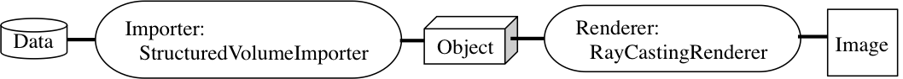
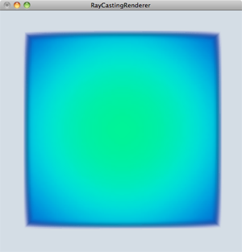
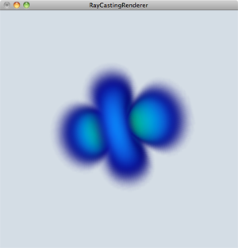

例 ボリュームデータのレイキャスティング
構造型ボリュームデータをインポートしてレイキャスティング法でレンダリングしてみましょう．
ここで用いる可視化パイプラインは
- Importer ：StructuredVolumeImporter
- Renderer：RayCastingRenderer
を用います．
データをそのまま使うため，FilterとMapperはここでは使用しません．

可視化パイプライン
1. 作業ディレクトリの作成
作業ディレクトリに「RayCasting」というディレクトリを作成して，移動して下さい．
$ mkdir RayCasting
$ cd RayCasting
2. main.ccp の作成
「main.cpp」というファイルを作成して下さい．
プログラム実行の際にコマンドライン引数としてファイルを読み込むようにするため，引数のチェックをします．
int main( int argc, char** argv )
{
if( !(argc == 2 ) ) {
std::cerr << "USAGE (1): ./RayCasting volume_data" << std::endl;
exit(1) ;
}
return ( 0 );
}
3. 構造型ボリュームデータのImport
コマンドライン引数として与えられたファイル名をインポート（kvs::StructuredVolumeImporter）して構造型ボリュームデータ（kvs::StructuredVolumeObject）へ変換します．
また，このとき正しくファイルが読み込めたのかチェックします．
kvs::StructuredVolumeObject* object
= new kvs::StructuredVolumeImporter( std::string( argv[1] ) );
if ( !object ) { // ファイルが正しく読み込めたのかチェック
kvsMessageError( "Cannot create a structured volume object." );
return( false );
}
4. Renderer の作成
Renderer を作成します．ここでは，Renderer にkvs::RayCastingRendererを選択しています．
また，正しくRendererが作成できたかをチェックします．
kvs::RayCastingRenderer* renderer = new kvs::RayCastingRenderer();
if ( !renderer ) {
kvsMessageError( "Cannot create a ray casting renderer." );
delete object;
return( false );
}
5. 描画
可視化処理を行います．
kvs::Applicationとkvs::Screenにより，ウィンドウの初期化や記イベントの登録を行います．
ここでは，Screenクラスのメソッド registerObjectへObjectだけではなく，Renderer も登録していることに注意して下さい．これにより，ユーザが作成・設定したRenderer を用いて描画処理を行うことが可能になります．
kvs::Application app( argc, argv );
kvs::Screen screen( &app );
// ScreenクラスにオブジェクトとRendererを登録
screen.registerObject( object, renderer );
screen.setGeometry( 0, 0, 512, 512 );
screen.setTitle( "RayCastingRenderer" );
screen.show();
return( app.run() );
6. ヘッダファイル
使用したKVSクラスをインクルードします．
ここでは，
- kvs::StructuredVolumeImporter
- kvs::StructuredVolumeObject
- kvs::RayCastingRenderer
- kvs::Screen
- kvs::Application
を使いました．
#include <kvs/StructuredVolumeObject>
#include <kvs/StructuredVolumeImporter>
#include <kvs/RayCastingRenderer>
#include <kvs/Application>
#include <kvs/Screen>
7. まとめ
以上をまとめたプログラムはこちら： RayCasting.tgz
※ このフォルダ内にはテスト用ボリュームデータ
- ＊ test.fld
- ＊ hydrogen.kvsml
- ＊ lobster.fld
が入っています．
8. コンパイルと実行
作成したプログラムをコンパイル，実行してみましょう．
KVSプログラムをコンパイルするためにはkvsmakeコマンドを用いてMakefileを作成すると簡単にコンパイルを行うことができます．
$ kvsmake -G <-- Makefile の作成
$ kvsmake <-- コンパイル
エラーなくコンパイルできたら，実行してみましょう．
実行すると，以下のような結果が得られます．
$ ./RayCasting test.fld
$ ./RayCasting hydrogen.kvsml
 
test.fld hydrogen.kvsml
Modefied at June 16, 2013
at April 27, 2017
at May 28, 2021